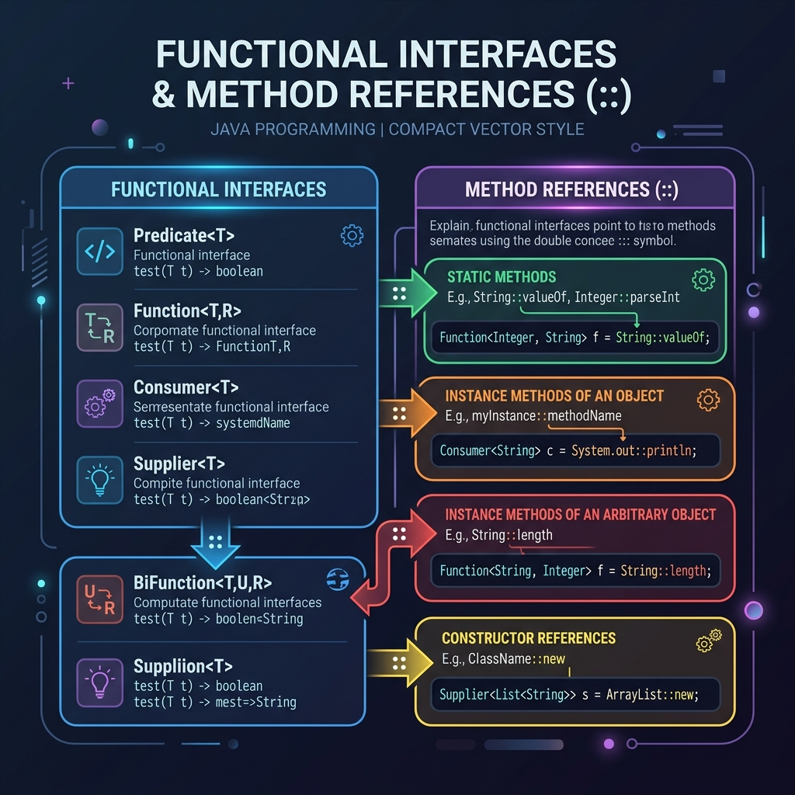

In Java 8, lambdas made it easy to pass blocks of code as parameters. However, you will often write a lambda that does nothing but call an existing method. To make this code even cleaner, Java 8 introduced Method References using the double colon (::) syntax.
In this guide, we will look at how to convert lambdas to method references for static methods, instance methods, and constructors.

Imagine your friend asks you how to bake a cake:
- Lambda Expression: You write out: "To bake a cake, open the recipe book on page 5, follow step 1, step 2, step 3..." You write the instructions yourself.
- Method Reference (
::): You simply point to the recipe book and say: "Do what page 5 says." You refer to an existing, pre-written method directly without explaining it.
1. Reference to a Static Method
If a lambda calls a static method, you can replace the parameter declarations with a direct class reference:
// Lambda Way
Supplier<Double> randomLambda = () -> Math.random();
// Method Reference Way
Supplier<Double> randomRef = Math::random;2. Reference to an Instance Method of a Specific Object
If you call a method on a specific pre-constructed object instance:
Consumer<String> lambdaPrinter = (msg) -> System.out.print(msg);
// Pointing directly to the out object's print method
Consumer<String> refPrinter = System.out::print;3. Reference to an Instance Method of an Arbitrary Object
If you call a method on the parameter object itself:
// Lambda Way
UnaryOperator<String> trimLambda = (str) -> str.trim();
// Method Reference Way (refer to class type)
UnaryOperator<String> trimRef = String::trim;Here, Java understands that the object passed into the UnaryOperator will be the target of the .trim() call.
4. Reference to a Constructor
You can refer to a class constructor using the new keyword:
// Lambda Way
Supplier<Person> personLambda = () -> new Person();
// Method Reference Way
Supplier<Person> personConstructor = Person::new;Conclusion
Method references are simply syntactic sugar on top of lambda expressions. By pointing directly to existing methods, you write less boilerplate and make your stream pipelines much easier to read.